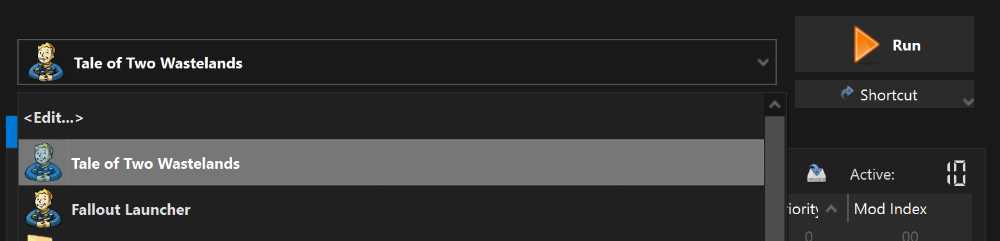

Essential Mods
In this step, we will install mods that are required by the game and Tale of Two Wastelands to function properly
If you run into any issues at any point in the guide, please be sure to check the FAQ.
If your issue is not addressed there, join the Discord for support.
You obviously need to skip this mod if you have the Steam or GOG version of the game.
Installation instructions:
-
Main Files - Epic Games Patcher (Manual download).
- From the downloaded archive, extract everything to the game's Root folder.
- Double-click on Patcher.exe to run it.
- A command prompt window will open and after processing it should say Press any key to continue...
- Close the command prompt and a file named FalloutNV_backup.exe should appear in the game's Root folder.
Installation instructions:
- Main Files - New Vegas Script Extender (xNVSE) (Manual download).
- From the downloaded archive, extract everything to the game's Root folder.
-
After proper install, your Root Folder should look like this:

If you do not know what the Root folder is, read the Key Terminology section from the Setup page.
Despite its name, nvse_steam_loader.dll is still needed with the GOG version of the game.
This is required for both Steam & GOG users! The 4GB Patch included with the GOG release is obsolete as it lacks NVSE integration.
Epic Games Store users already have this patch thanks to the Epic Games Patcher used before, so they can skip this.
Installation instructions:
-
Main Files - 4GB Patcher (Manual download).
- From the downloaded archive, extract the .exe file to the game's Root folder.
- Double-click on FNVpatch.exe to run it.
- A command prompt window will open and should say FalloutNV.exe patched!
- Close the command prompt and a file named FalloutNV_backup.exe should appear in the game's Root folder.
From now on, you should run the game through the Tale of Two Wastelands option in MO2, rather than the NVSE option. This mod makes the game auto-load NVSE when you run the game through the default executable, which is generally the safer option.
Installation instructions:
-
Main Files - NVHR (Manual download).
- From the downloaded archive, extract everything to the game's Root folder.
Creating a Separator in MO2.
- Right-click the empty space in the left pane of MO2 and select Create separator.
- Name the separator Utilities.
This is the first mod in the guide that is installed with the Mod Manager Download button, you will need to click that button then head to the Downloads section of Mod Organizer 2 to install it. Once installed, make sure you check the box next to it in the left pane of MO2 to enable it.
Installation instructions:
- Main Files - ROOGNVSE
If you see a pop-up called No category found, select Disable.
Installation instructions:
- Main Files - JIP LN NVSE Plugin
- Main Files - JIP LN Settings INI
Installation instructions:
- Main Files - JohnnyGuitar NVSE
- JohnnyGuitar NVSE - INI Presets
- Main Files - JohnnyGuitar NVSE - All Tweaks Preset
Installation instructions:
- Main Files - Crash Logger
Installation instructions:
- Main Files - NVTF
- NVTF - INI Presets
- Main Files - NVTF - Viva Default Preset
IMPORTANT:
If you are planning to install texture mods, use NVTF - Texture Modding Preset instead!
Warning:
Alt-Tab will not work when using the Texture preset - make sure to follow Performance and Stability Guide in the next section for a fix.
lStewieAl's Tweaks and Engine Fixes
Installation instructions:
- Main Files - Stewie Tweaks
Installation instructions:
- Main Files - Stewie Tweaks Essentials INI
lStewieAl's Engine Optimizations
Installation instructions:
- Main Files - Engine Optimizations
Installation instructions:
- Main Files - Fast Weapon Lag Fix
Installation instructions:
- Main Files - VATS Lag Fix
Installation instructions:
- Main Files - ActorCause Save Bloat Fix
Installation instructions:
- Main Files - MLF
Installation instructions:
- Main Files - kNVSE
Installation instructions:
- Main Files - Improved Console
Installation instructions:
- Main Files - Console Paste
Installation instructions:
- Main Files - Basic Console Autocomplete
Installation instructions:
- Main Files - ShowOff NVSE
Installation instructions:
- Main Files - UIO - User Interface Organizer
Linux users!In this step we will take advantage of JIP LN NVSE's FalloutCustom.ini feature to improve performance and stability without affecting the main INIs.
Proton 8.0-5 crashes with UIO! Please use Proton 8-25 or newer.
- Click the
 button at the top of MO2 and select INI Editor.
button at the top of MO2 and select INI Editor. - Select the FalloutCustom.ini tab, which should be blank. In case it's not, clear the file.
- Make sure you are in the FalloutCustom.ini tab and NOT the Custom.ini tab.
- Paste in the following:
If you don't see the FalloutCustom.ini tab, then you have not enabled profile-specific Game INI Files in Profile settings during MO2 configuration.
It is highly recommended to avoid changing any other INI settings not in the guide, and to avoid using tools like BethINI. You will realistically not need any other tweaks than the ones already in the guide.
Performance and Stability Guide
If you are an AMD GPU user, installing DXVK is mandatory otherwise your game will crash.In-depth guide about how to fix the game's lackluster performance, display issues and alt-tabbing. Covers topics such as DXVK, framerate limiting, display modes, lag and HDR.
- Restart your PC (otherwise some plugins may fail to load).
- Launch the game using the Tale of Two Wastelands option in MO2 (not the NVSE option). 
- If you see a black console window appear, it means NVHR is working.
- If not, NVHR is installed incorrectly.
- Once the game has reached the main menu, hit the
~key (above the tab key) to open the console. Don't start a new game. - You will need to unplug/disconnect any controllers to be able to use the keyboard.
- Enter
GetNVSEVersionand the console should printNVSE version: 6 - If not, xNVSE is installed incorrectly.
- Next, enter
GetIsLAAand the console should printGetIsLAA >> 2 - If it prints
>> 0, then the 4GB Patch was applied incorrectly. - If it prints an error message, then JIP LN NVSE is installed incorrectly.
- Next, enter
GetINISetting "iNumHWThreads:General"and the console should printINISetting iNumHWThreads:General >> 3 - If not, then the Tweaking FalloutCustom.ini step was done incorrectly.
- Next, enter
IsDLLLoaded CrashLoggerand the console should printIsDLLLoaded "CrashLogger.dll" >> 1 - If not, then Crash Logger is installed incorrectly.
- Next, enter
IsDLLLoaded NVTFand the console should printIsDLLLoaded "nvtf.dll" >> 1 - If not, then NVTF is installed incorrectly.
- Lastly, enter
IsDLLLoaded mlfand the console should printIsDLLLoaded "mlf.dll" >> 1 - If not, then Mod Limit Fix is installed incorrectly.
- Close the game.